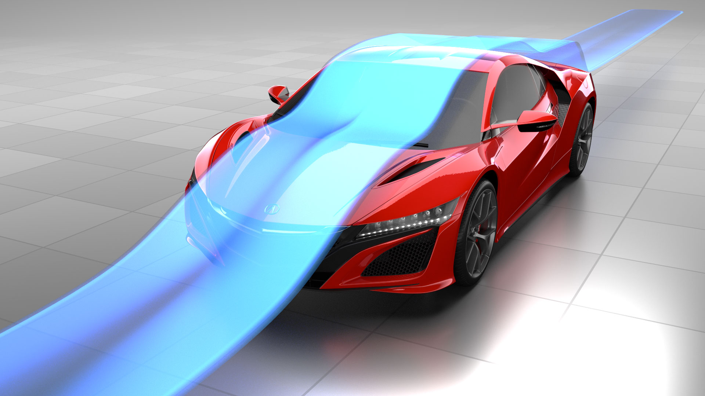
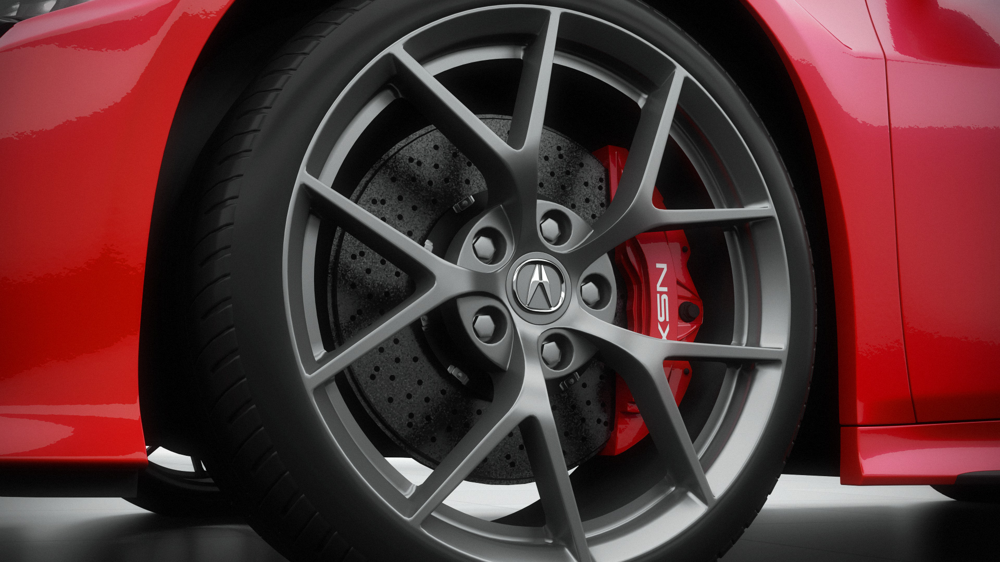
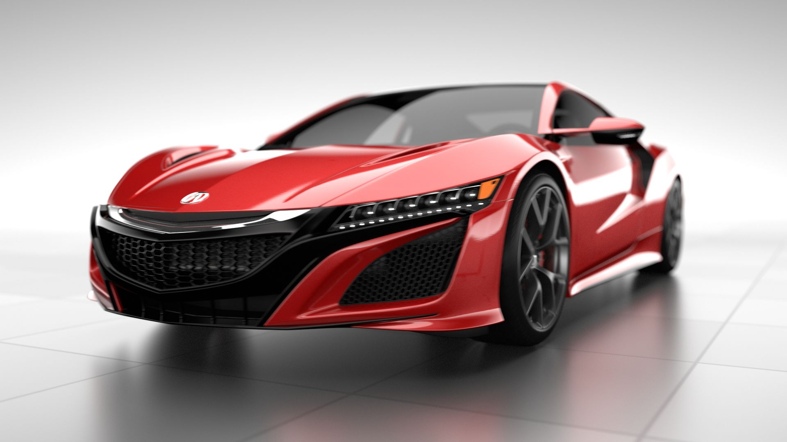
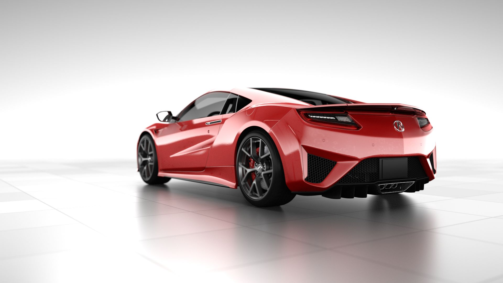

Acura NSX Aerodynamics Film
When Honda was designing the new Acura NSX, they needed a way to present the aero design of the car in a visually pleasing and understandable way. I was lucky enough to be part of that process.
I developed the overall 'look' for the animation. Starting with the materials for the vehicle, then the background, and finally the lighting and visual effects, the process took 3 weeks. It was challenging to design a car paint that is faithful to the pearlescent red of the new NSX while making it look good in an all-white backdrop.
The goal of the animation is to showcase how the design maximizes all 3 targets at the same time:
- Cooling
- Reduce Drag
- Increase Downforce
All the aerodynamics simulation data was supplied. Furthermore, as an external consultant, I had no access to the actual geometry of the vehicle, a pipeline had to be setup where a proxy geometry is used by me, to be replaced by the real geometry once I deliver the render-ready scene.
 The focus of the project is delivering a photo-realistic rendering of the car in the most flattering lighting possible. Using Blender and Cycles Renderer allowed me to rapidly setup complex nodal materials as well as experimenting with lighting setups.  The finished animation can be seen on Acura's homgepage below: